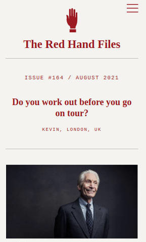

The Red Hand Files
Nick Cave is a well-known and much-loved musician. I know very little about his music. But Cave's writing at The Red Hand Files is astonishingly great. Here he answers letters from fans, often addressing the most painful questions with wisdom, grace and lots of hope. Cave is an everyday sage, an old soul, a man who has lived with his eyes open. Some of his best letters weave several unrelated questions in a cohesive answer, such as this one about a chance meeting with drummer Charlie Watts. Other favorites of mine include this one about a grieving mother, and this gracious and hopeful response to a struggling fan.Best Code Teachers
- Gregg Pollack
- Maximilian Schwarzmüller
- Stephen Grider
- Angela Yu
- Vaidehi Joshi
- Colt Steele
- Brad Schiff